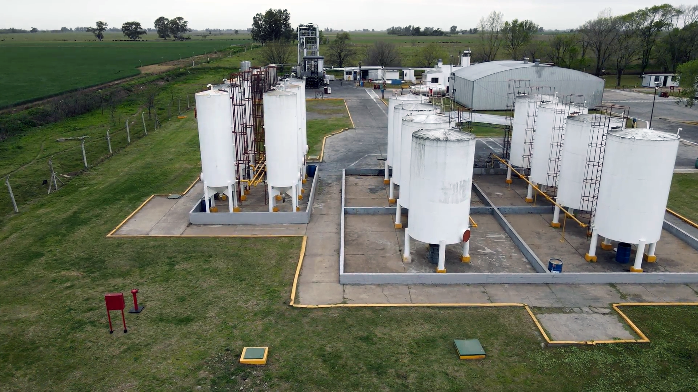

Nuestra Historia

Somos pioneros en el reciclado y cuidado del medio ambiente. Construimos un mundo mejor para las futuras generaciones.
1985
Fundamos la compañía en el Parque Industrial de Lincoln como una industria química
destinada a satisfacer la necesidad de recuperar solventes a partir de mezclas generadas por
la industria farmo-química.
1995 – 1996
Es sancionada la Ley Nacional 24.051 y la Ley Provincial 11.720.
1997
Las nuevas leyes ponen en agenda pública el tema ambiental. Iniciamos una reconversión orientada a dar sustento tecnológico a los desafíos planteados entre industria y medio ambiente.
2004 – 2012
Incrementamos nuestra flota logística. Incorporamos nuevos equipos de destilación, aumentamos la capacidad de acopio de residuos. Trabajamos en la formación de un equipo profesional altamente capacitado. Invertimos en la seguridad de nuestra planta. Fortalecemos nuestra presencia en el mercado.
2013
Iniciamos la construcción de una nueva planta de acopio, clasificación y reempaque en zona industrial exclusiva de Florencio Varela.
2014
Inauguramos nuestra nueva planta con asistencia de autoridades Municipales y de OPDS Provincia de Buenos Aires. Además, fortalecimos lazos de complementación con plantas de incineración, tratamiento de aguas, rellenos de seguridad y fundamentalmente con plantas de combustibles alternativos para hornos de cemento.
2016
Nuestros directivos asisten a las Ferias Internacionales de Medio Ambiente, IFAT en Munich Alemania y Ecomondo en Rimini Italia en procura de tecnologías de reciclado y conversión de residuos en combustibles alternativos para hornos de cemento
2017
Inauguramos la ampliación de la Planta de Florencio Varela.
2019
Certificamos nuestro Sistema de Gestión de Calidad y Medio Ambiente bajo las normas internacionales ISO 9001:2015 e ISO 14001:2015 por parte de Bureau Veritas. Nuestros directivos asisten a la feria internacional de Medio Ambiente IFAT Shangai y visitan distintas plantas de operación, tratamiento y reciclado de RSU y RE enriqueciendo nuestros conocimientos en el rubro.
2021
Ampliamos la capacidad de acopio de residuos especiales líquidos inflamables y residuos especiales líquidos base acuosa en Planta Florencio Varela.
2022
Iniciamos una tercera etapa de ampliación de instalaciones en la Planta Florencio Varela. Instalamos 12 nuevos tanques aéreos para acopio de diversos solventes en la Planta de fabricación de diluyentes .Construimos un nuevo galpón de acopio y clasificación de residuos de 700 m2. Ampliamos pisos de hormigón para Playa de camiones y taller de Mantenimiento. Ampliamos la Red de Incendio. Directivos y Personal técnico asistieron a la Exposición IFAT (Tecnologías de Medio Ambiente) en Munich Alemania
2023
Ampliamos la capacidad de destilación en la Planta de Lincoln. En cumplimiento de la Normativa vigente en materia de Transporte de Residuos Especiales, revocamos parcialmente la flota logística.